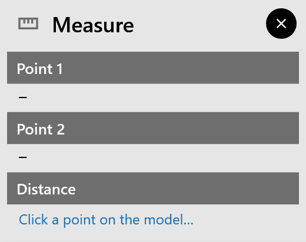

Measuring
measure on the rail measures the distance between two points in the 3D view. It is there once a part’s drawing is open, and with every solution.
Measuring a distance
-
Click measure. The button lights up and the Measure window opens.
-
Move the pointer over the model. A magenta label shows the point’s coordinates, X … Y … Z ….
-
Click the first point, then the second. A magenta line joins them, and an orange box marks each object you picked.
-
A third click starts a new measurement.
While measuring, a click only picks a point: the gripper, the TCP sphere and the stations do not open their panels.

The Measure window shows:
-
Point 1 and Point 2, each with what it lies on: a robot link, a part surface (any STEP model, cell elements included) or a mesh;
-
Distance: the distance, for example 123.45 mm, and its parts ΔX, ΔY and ΔZ.
All values are in the world frame.
Close the Measure window with its ✕, or click measure again, to stop measuring.
Snapping
The point snaps to the model’s edges, so you can measure exactly:
-
the nearest edge lights up in cyan;
-
a yellow marker shows the point, and it is larger on a corner;
-
corners catch within 8 mm, edges within 30 mm.
|
Note
|
On a STEP part the point always snaps to the nearest edge of a face, so you can’t pick a point in the middle of a face. |